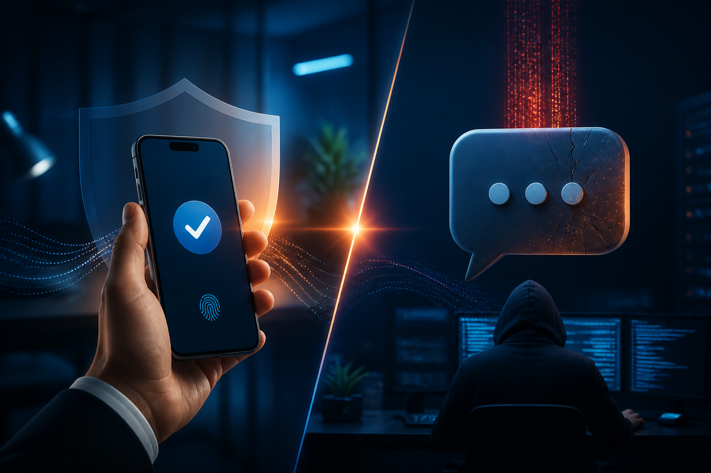
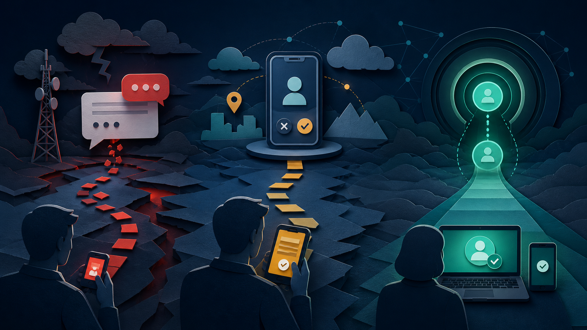
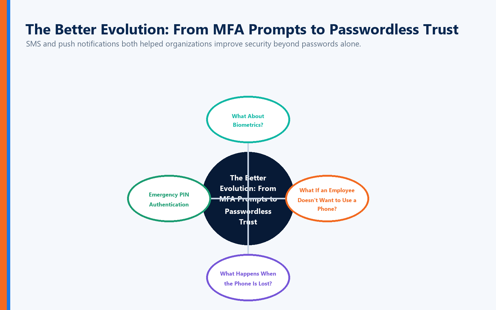
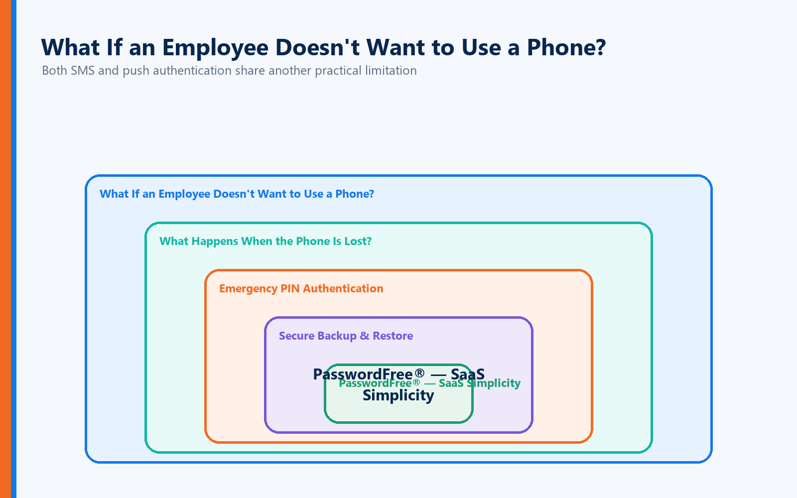
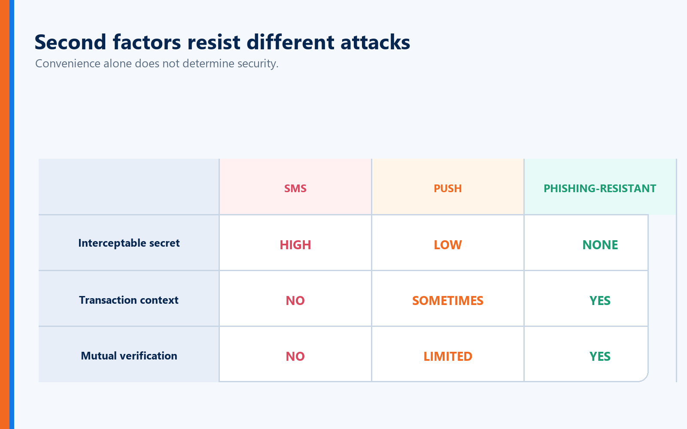
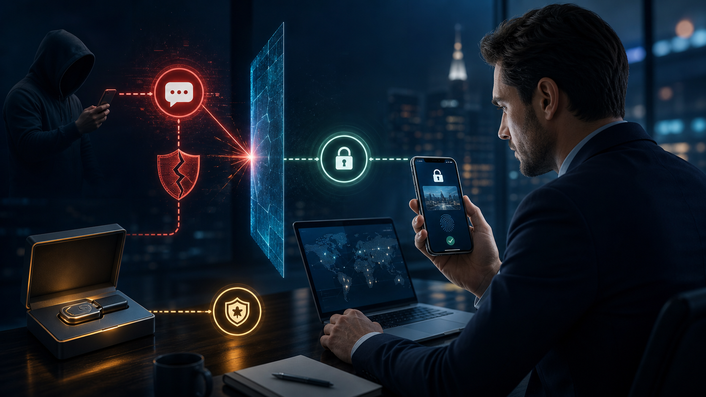
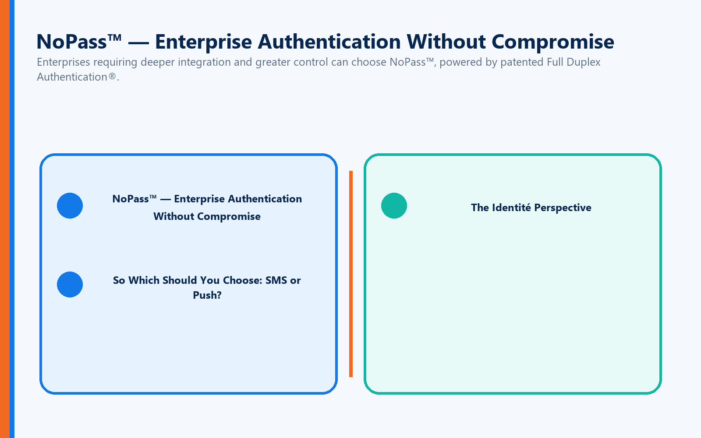

Generally, a properly designed push-based authentication system can eliminate several weaknesses associated with SMS because authentication isn't dependent on receiving a text message through the mobile network.
But that doesn't automatically make every push implementation phishing-resistant.
Simple Approve/Deny prompts can be susceptible to push fatigue and social engineering.
More advanced implementations can improve security through techniques such as:
Number matching
Login context
Geographic information
Application identification
Risk-based authentication
Those improvements matter.
But there's a broader issue.
Both SMS and many push implementations remain part of an authentication model built around:
Password + Additional Challenge
The password remains.
The authentication interruption remains.
And in some cases, the user still bears significant responsibility for recognizing whether the authentication request is legitimate.
The Bigger Problem: What If the Website Is Fake?
This is where comparing SMS and push notifications misses an increasingly important part of the authentication problem.
Suppose an attacker creates a convincing copy of your company's login page.
The logo is correct.
The colors are correct.
The login screen is virtually identical.
The domain differs from the real one by a single character.
The user sees what appears to be a legitimate website and begins authenticating.
With SMS, the attacker may attempt to capture the password and one-time code.
With some forms of push authentication, the attacker may attempt to trigger an authentication request and convince the victim to approve it.
In both cases, the authentication system is primarily asking:
"Can the user prove who they are?"
But there's another question that matters just as much:
"Can the website prove who it is?"
What Is Full Duplex Authentication®?
Full Duplex Authentication® (FDA) is the patented authentication technology powering PasswordFree®, Identité's Software-as-a-Service (SaaS) authentication solution, and NoPass™, its PaaS solution that can be deployed on premises or in the cloud.
Instead of relying on a traditional one-way authentication relationship, FDA establishes mutual authentication. The user authenticates to the legitimate application or website, while that application or website must also authenticate itself as legitimate.
Authentication therefore isn't complete simply because the system recognizes the user. Both sides of the relationship must establish trust.
This fundamentally changes the security question.
Traditional authentication asks:
"Are you the authorized user?"
Full Duplex Authentication® additionally asks:
"Are you connecting to the authorized destination?"
Why Full Duplex Authentication® Matters Against Phishing

A cybercriminal can build an extraordinarily convincing imposter website.
They may copy:
Logos
Graphics
Fonts
Website layouts
Login pages
Corporate branding
They may register a lookalike domain that is extremely difficult for a user to distinguish from the legitimate domain.
But copying a website's appearance doesn't give the attacker its identity.
The imposter site cannot successfully perform the legitimate website's side of Full Duplex Authentication®.
The fake site might fool the human eye.
It cannot authenticate as the legitimate destination.
That is an important distinction from authentication models that rely heavily on users recognizing phishing attempts themselves.
The Better Evolution: From MFA Prompts to Passwordless Trust

SMS and push notifications both helped organizations improve security beyond passwords alone.
But authentication technology continues to evolve.
The progression can be viewed as:
Password Only → SMS MFA → Push MFA → Passwordless Authentication → Mutual Authentication
Each stage attempts to remove weaknesses from the previous model.
The ultimate objective shouldn't be making users perform more security steps.
It should be establishing stronger trust with fewer opportunities for attackers to intervene.
What About Biometrics?
Passwordless authentication can use convenient device-based mechanisms such as fingerprint or facial recognition to help establish the authorized user.
Identité's approach provides another important privacy distinction.
Biometric data remains on the user's device.
Identité utilizes a decentralized authentication architecture designed so that users' biometric data does not need to be transmitted to Identité, the employer, or a centralized biometric database for matching.
That means organizations don't need to create a central repository containing employees' fingerprints or facial biometric information.
The biometric helps establish:
"This is the authorized user."
The trusted device participates in establishing:
"This is the authorized device."
Full Duplex Authentication® additionally establishes:
"This is the legitimate destination."
Together, those capabilities create a more complete trust relationship.
What If an Employee Doesn't Want to Use a Phone?

Both SMS and push authentication share another practical limitation:
They frequently make the smartphone central to authentication.
That isn't appropriate for every employee or workplace.
Some users:
Don't want to use personal phones for work.
Work in facilities where smartphones are prohibited.
Prefer physical authentication devices.
Have accessibility requirements.
Work in highly controlled environments.
Identité is compatible with supported third-party hardware tokens, including security keys such as YubiKey®.
This allows organizations to build authentication policies around their actual operational and security requirements rather than forcing every user into a single authentication method.
What Happens When the Phone Is Lost?
Whether an organization uses SMS, push authentication, or passwordless authentication, one practical reality remains:
Phones disappear.
They get lost.
They break.
They get replaced.
They run out of power.
Authentication should anticipate those situations rather than turning them into emergencies.
That's why Identité approaches authentication as a business continuity issue as well as a cybersecurity issue.
Emergency PIN Authentication

When permitted by organizational policy, authorized users can use an Emergency PIN when their primary authentication device is temporarily unavailable.
The Emergency PIN isn't intended to replace normal authentication.
It provides a controlled continuity mechanism so that a missing device doesn't automatically become a lost workday.
Secure Backup & Restore
If a phone is permanently lost or replaced, users shouldn't have to rebuild authentication from scratch.
With PasswordFree® and NoPass™, users can securely back up their authentication profile according to organizational configuration to:
Secure cloud storage
The corporate network
When a replacement phone becomes available, the authentication profile can be restored.
The restore process can be completed in less than two minutes.
That means less downtime for users and fewer emergency recovery calls for IT.
PasswordFree® — SaaS Simplicity

Organizations seeking a cloud-delivered passwordless authentication solution can choose PasswordFree®, Identité's SaaS offering.
PasswordFree® is designed to provide:
Passwordless authentication
Mutual authentication powered by FDA
Decentralized biometric verification
Reduced reliance on SMS and conventional push MFA
Protection against phishing and imposter websites
Emergency PIN Authentication
Secure Backup & Restore
Support for compatible third-party authentication options
Reduced help desk workload
The objective isn't to give employees another MFA step.
It's to reduce unnecessary authentication friction while strengthening security.
NoPass™ — Enterprise Authentication Without Compromise

Enterprises requiring deeper integration and greater control can choose NoPass™, powered by patented Full Duplex Authentication®.
NoPass™ can be installed on premises or deployed in the cloud and is designed for organizations requiring integration with environments such as:
Microsoft Active Directory
Microsoft Entra ID
Microsoft 365 / Office 365
Microsoft Azure
For banks and other organizations with stringent requirements surrounding sensitive data, an on-premises NoPass™ deployment allows authentication infrastructure to remain within the organization's controlled environment.
Healthcare organizations, government agencies, financial institutions, and other highly regulated enterprises can similarly choose the deployment architecture appropriate to their security and compliance requirements.
So Which Should You Choose: SMS or Push?
If those are the only two options, a well-designed push authentication system will generally provide advantages over SMS, particularly because it avoids direct reliance on the telephone network and SIM-based delivery.
But organizations shouldn't stop the evaluation there.
Ask:
Does it still depend on passwords?
Can authentication be phished or relayed?
Can users be tricked into approving requests?
Does the solution verify the destination as well as the user?
What happens if the phone is unavailable?
Can employees use alternative authentication methods?
How quickly can users recover after replacing a device?
Those questions reveal far more about an authentication platform than whether it sends a text message or a push notification.
The Identité Perspective
SMS authentication helped organizations move beyond password-only security.
Push authentication improved the experience by making the second authentication step faster and reducing dependence on text messages.
Both represented progress.
But modern authentication shouldn't be measured by how conveniently we can deliver another MFA prompt.
It should be measured by how effectively we can establish trust.
That's the philosophy behind PasswordFree® and NoPass™, powered by patented Full Duplex Authentication®.
The user establishes:
"I am the authorized user."
The trusted device participates in establishing:
"This is the authorized device."
And Full Duplex Authentication® establishes:
"This is the legitimate destination."
Combine that with decentralized biometric verification, compatible third-party hardware tokens, Emergency PIN Authentication, and Secure Backup & Restore, and authentication becomes more than another security challenge delivered to a phone.
It becomes a complete trust relationship designed around security, privacy, productivity, and business continuity.
Because the future of authentication isn't deciding whether to send a code or a notification.
It's eliminating the need to make that choice in the first place.